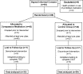
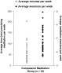
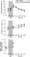
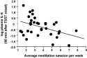
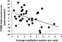
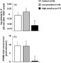

|
Copyright © 2008 Elsevier Ltd All rights reserved. |
 Permissions & Reprints Permissions & Reprints |
Thaddeus W.W. Pacea, Lobsang Tenzin Negib, Daniel D. Adamec, Steven P. Coled, Teresa I. Sivillie, Timothy D. Brownf, Michael J. Issae and Charles L. Raisona,  ,
, 
Summary
Meditation practices may impact physiological pathways that are modulated by stress and relevant to disease. While much attention has been paid to meditation practices that emphasize calming the mind, improving focused attention, or developing mindfulness, less is known about meditation practices that foster compassion. Accordingly, the current study examined the effect of compassion meditation on innate immune, neuroendocrine and behavioral responses to psychosocial stress and evaluated the degree to which engagement in meditation practice influenced stress reactivity. Sixty-one healthy adults were randomized to 6 weeks of training in compassion meditation (n = 33) or participation in a health discussion control group (n = 28) followed by exposure to a standardized laboratory stressor (Trier social stress test [TSST]). Physiologic and behavioral responses to the TSST were determined by repeated assessments of plasma concentrations of interleukin (IL)-6 and cortisol as well as total distress scores on the Profile of Mood States (POMS). No main effect of group assignment on TSST responses was found for IL-6, cortisol or POMS scores. However, within the meditation group, increased meditation practice was correlated with decreased TSST-induced IL-6 (rp = −0.46, p = 0.008) and POMS distress scores (rp = −0.43, p = 0.014). Moreover, individuals with meditation practice times above the median exhibited lower TSST-induced IL-6 and POMS distress scores compared to individuals below the median, who did not differ from controls. These data suggest that engagement in compassion meditation may reduce stress-induced immune and behavioral responses, although future studies are required to determine whether individuals who engage in compassion meditation techniques are more likely to exhibit reduced stress reactivity.
Keywords: Meditation; Compassion; Mindfulness; Trier social stress test; Cortisol; Interleukin-6
Article Outline
- 1.
- Introduction
- 2.
- Methods
- 2.1. Participants
- 2.2. Overview of study procedures
- 2.3. Recruitment, randomization and allocation concealment
- 2.4. Compassion meditation and health education discussion groups
- 2.5. Trier social stress test (TSST)
- 2.6. Assessment of physiological measures
- 2.7. Assessment of behavioral symptoms
- 2.8. Statistical analysis
- 3.
- Results
- 4.
- Discussion
- 4.1. Summary of study findings
- 4.2. Study implications
- 4.3. Study limitations
1. Introduction
Increasing evidence suggests that meditation practices may impact physiological pathways, including the immune and neuroendocrine systems, which are modulated by stress and are relevant to disease development and progression ([Taylor, 1995], [Carlson et al., 2003], [Carlson et al., 2007], [Davidson et al., 2003], [Hidderley and Holt, 2004], [Ospina et al., 2007] and [Tang et al., 2007]). For example, Davidson et al. reported that training in mindfulness meditation enhanced antibody production following influenza vaccination (Davidson et al., 2003), and Carlson et al. found that participants with early stage cancer who were trained in mindfulness-based stress reduction (MBSR) showed decreases in monocyte numbers as well as decreased stimulated production of interferon-gamma and interleukin (IL)-10, which persisted for 1 year ([Carlson et al., 2003] and [Carlson et al., 2007]). In addition, Tang et al. found that training in an “integrative meditation” was associated with reduced cortisol responses to a 3-min mental arithmetic stressor (Tang et al., 2007).To date, the majority of studies examining the effects of meditation on immune and neuroendocrine parameters have focused on practices that emphasize calming the mind (e.g. transcendental meditation [TM®]), improving focused attention, or developing mindfulness (e.g. MBSR) ([Ospina et al., 2007] and [Lutz et al., 2008a]). We wondered whether forms of meditation that build upon these practices by adding techniques designed to actively generate compassion for other people might also be effective in modulating physiological stress responses. Examples of these types of compassion practices include loving-kindness (metta) from the Theravada Buddhist tradition and mind-training (lojong) from Tibetan Buddhism ([The Dalai Lama, 2001], [Salzberg, 2002] and [Lutz et al., 2008a]). Although little is known regarding the effect of compassion meditation (or other compassion training techniques) on stress-related behavioral and neurobiological responses ([Carson et al., 2005], [Gilbert and Procter, 2006] and [Lutz et al., 2008a]), interest in compassion meditation within the research community has heightened significantly over the last 5 years as a result of several inter-related findings. First, while practicing compassion meditation, advanced Tibetan Buddhist practitioners appear capable of strongly inducing EEG patterns previously associated with positive emotionality and enhanced adaptive immune functioning (Goleman, 2003). Second, a recent study suggests that even brief exposure to compassion meditation training may affect activity in stress-relevant brain areas such as anterior cingulate and amygdala (Lutz et al., 2008b). Third, metta practices have been shown to increase self-compassion ([Shapiro et al., 2005] and [Shapiro et al., 2007]). Self-compassion, in turn, has been associated with a variety of desirable endpoints, including reductions in perceived stress, burnout, depression, and anxiety as well as increases in life satisfaction ([Neff et al., 2005], [Shapiro et al., 2005], [Gilbert and Procter, 2006], [Neff et al., 2007] and [Shapiro et al., 2007]). Finally, of direct relevance to the current study, data also suggest that individuals with strong self-compassion demonstrate attenuated negative emotional reactions to laboratory psychosocial stressors. For example, self-compassion (but not self esteem) was associated with less anxiety in response to a mock job interview and less distress after receiving neutral feedback in response to a videotaped speech performance ([Leary et al., 2007] and [Neff et al., 2007]). Because laboratory psychosocial stressors have been shown to reliably activate innate immune and neuroendocrine pathways ([Bierhaus et al., 2003], [Dickerson and Kemeny, 2004], [Pace et al., 2006] and [Steptoe et al., 2007]), it is possible that compassion meditation training may reduce emotional responses to stress and thereby attenuate stress-induced activation of innate immune and neuroendocrine responses. Nevertheless, to our knowledge, no studies have examined this possibility.
Accordingly, the current study was designed as an initial investigation into the effect of lojong-based compassion meditation training on innate immune and neuroendocrine responses to psychosocial stress. More specifically, we sought to test the hypothesis that training in and practice of compassion meditation would reduce interleukin (IL)-6 and cortisol responses to a standardized laboratory psychosocial stressor (Trier social stress test [TSST]) in medically healthy young adults when compared to a health discussion control group. Testing the effect of meditation on these physiological responses is of significant potential health relevance given increasing data that chronic life stress increases plasma concentrations of IL-6 and that even mildly increased levels of plasma IL-6 (and/or its downstream product c-reactive protein) predict the development of a number of disease states, including vascular disease, diabetes and dementia ([Ridker, 2000], [Pradhan et al., 2001], [Kiecolt-Glaser et al., 2003], [Perry et al., 2007] and [Steptoe et al., 2007]). Major depression has also been repeatedly associated with increased plasma concentrations of IL-6 (Raison et al., 2006). Likewise, increases in cortisol have been frequently observed in major depression and have been posited to contribute to stress-related metabolic abnormalities and neurotoxicity (Raison and Miller, 2003). Moreover, recent data indicate that cortisol responses to stress may modulate IL-6 responses and thus may contribute to long-term effects of stress on disease development via modulatory effects on the innate immune response (Bower et al., 2007).
Finally, because of the paucity of studies that have examined the relative engagement of research subjects in compassion meditation techniques ([Carson et al., 2005], [Lutz et al., 2008a] and [Lutz et al., 2008b]), we also sought to assess the extent of participation in the compassion meditation program (as reflected by class attendance and meditation practice) and its potential relationship with relevant immune, neuroendocrine and behavioral outcome variables.
2. Methods
2.1. Participants
All participants were recruited from an introductory health education class at Emory University. Subjects were between the ages of 17 and 19 (mean age 18.5 years, S.D. 0.7), were medically healthy and had no history of significant psychiatric illness (i.e. schizophrenia, bipolar disorder or depression severe enough to warrant hospitalization) as determined by a psychiatrist certified by the American Board of Psychiatry and Neurology. Potential participants were excluded at the beginning of the study for active psychiatric treatment (including psychotherapy/counseling) or for a score ≥30 on the Inventory of Depressive Symptoms-Self Report (IDS-SR), consistent with moderate to severe depression (Rush et al., 2000). Participants were free of all psychotropic medications prior to study entry and were free of other medications known to influence the immune or neuroendocrine systems for a minimum of 2 weeks prior to the TSST. Participants were excluded from the TSST for any signs of acute infection on the day of TSST administration. All participants provided written informed consent, and all study procedures were a priori approved by the Emory University Institutional Review Board.
2.2. Overview of study procedures
The study occurred during spring and fall semesters of the 2006 calendar year. Participants were stratified by sex and then randomly assigned to 6 weeks of compassion meditation training or a health discussion group, which served as the control condition. Between study weeks 8 through 10, subjects participated in a standardized laboratory psychosocial stressor (TSST). TSSTs occurred between 2 and 5 p.m., with timing of the test balanced between males and females and between participants in the meditation and control groups.
2.3. Recruitment, randomization and allocation concealment
All subjects were recruited from a health education class at Emory University. An overview of the study was provided at the first class of each semester by the principal investigator, and individuals interested in participating were provided with consent forms and scheduled for a screening appointment. Potential participants were informed that the purpose of the study was to examine health effects of meditation, and that participants randomized to the health discussion group would be offered a voluntary meditation class in the following semester. Individuals who met entry criteria following screening were stratified by sex and randomized. Randomization was accomplished through the use of separate computer generated randomization lists for males and females. Subjects were sequentially assigned a place on the appropriate randomization list based on the order in which they signed consent. Group assignment was concealed from participants and from study personnel interacting with participants until baseline data were obtained (i.e. depressive symptom score, body mass index, and demographic information).
2.4. Compassion meditation and health education discussion groups
The compassion meditation program employed in this study was designed and taught by one of us (LTN). Participants randomized to meditation training attended a 50-min class twice a week for 6 weeks. Class sessions combined teaching and discussion with an average of 20 min of meditation practice. Participants were provided with a meditation compact disk (CD) designed to guide “at-home” practice sessions that reflected material presented and practiced in class. Although secular in presentation, the compassion meditation program was derived from Tibetan Buddhist mind-training (Tibetan lojong) practices. These practices derive largely from writings ascribed to the Indian Buddhist masters Shantideva (8th Century) and Atisha (11th Century) (The Dalai Lama, 2001) and differ in important ways from the mindfulness-based practices that have received most of the scientific attention in recent years. Whereas mindfulness-based practices emphasize the development and maintenance of a non-judgmental stance toward thought processes and emotional reactions (Kabat-Zinn, 1991), lojong practices utilize a cognitive, analytic approach to challenge one’s unexamined thoughts and emotions toward other people, with the long-term goal of developing altruistic emotions and behavior towards all people (The Dalai Lama, 2001). Lojong-based compassion meditation has two primary elements: an initial phase in which various arguments are examined that challenge one’s common sense notion of other people as falling into the categories of “friend, enemy and stranger” and a second phase in which one practices developing spontaneous feelings of empathy and love for an ever expanding circle of people, beginning with the self and extending eventually to those with whom one has conflicts and/or dislikes. Within the Tibetan Buddhist tradition, concentrative (i.e. shamatha) and mindfulness (i.e. vipassana) practices are typically employed as valuable preliminary techniques for establishing the focus and awareness necessary to engage in specific compassion practices (The Dalai Lama, 2001). In keeping with this tradition, in the current study subjects were given 2 weeks of training in attentional and mindfulness-based techniques to help improve attention and awareness prior to commencing specific lojong compassion practices in training weeks 3–6. The training protocol was highly iterative, such that by the end of 6 weeks, each student’s daily meditation practice (guided by CD) began with a brief period of shamatha and vipassana to calm and focus the mind, followed by analytical practices designed to challenge unexamined assumptions regarding feelings and actions toward others with a focus on generating spontaneous empathy and compassion for themselves and others. Table 1 provides a week-by-week description of the elements of the compassion meditation protocol utilized in the current study.
| Week 1: Developing basic concentration and mental stability. Participants taught basic attentional meditation practice (i.e. shamatha) by using the breath as the object of focus |
| Week 2: Introduction of mindfulness (i.e. vipassana) practice. Participants instructed in the techniques of non-judgmental observation of the processes of thought and bodily sensation |
| Week 3: Use of concentrative and mindfulness techniques to explore universal human desires for happiness and wishes to avoid suffering as a prelude toward the practice of developing compassion for the self |
| Week 4: Continuing meditation on the thought that the self shares with all people a desire for happiness and a wish to avoid suffering, as well as a struggle to attain these goals. Participants instructed to expand upon this awareness to examine the contingent and changeable nature of the distinctions between “friends” and “enemies”, with the goal of generating a felt sense that instinctive emotional responses to others do not reflect reality |
| Week 5: Meditative reflection on the disadvantages of selfishness and a self-centered attitude and the advantages of considering the welfare of others. Participants guided through meditative techniques aimed at generating compassionate emotions and cognitions for those emotionally close to them |
| Week 6: Meditation aimed at attempting to generate compassionate emotions not only for friends, but also for strangers and people participants do not like. Instructions given for how to continue this practice “at-home” following completion of the class |
Participants randomized to the control condition attended health discussion groups that – like the meditation intervention – required 12 h of participation across the study period. During the first study semester groups met once a week for 12 weeks, and in the second semester they met twice a week for 6 weeks to better match the schedule of the meditation classes. Classes were taught by graduate students under the supervision of one of us (DDA). The content of groups in both semesters was identical and was designed by study investigators (DDA and TDB). Topics relevant to the mental and physical health of college students that were discussed included stress management, the physician’s exam, environmental health, substance abuse, depression and anxiety, body image and eating disorders, sexual assault, contraception, sexually transmitted infections and HIV/AIDS. In addition to didactic content delivered by the instructor, a variety of techniques were employed to enhance subject participation, including community building exercises, group discussion, mock debates and role playing. To provide some “at-home” activity to match the expectation that participants in the compassion meditation group would practice meditation on a daily basis, participants in the control group completed a weekly 2–3 page self-improvement paper focused on the health topic discussed that week in class.
For both meditation and control groups, participation in the study was assessed as the number of classes attended. For the meditation group, time spent practicing meditation outside of class was also recorded within 48 h of its occurrence using a secure, internet-based meditation diary. To evaluate level of engagement with the meditation practice, the mean number of meditation sessions engaged in per week during the study was calculated by adding all at-home sessions that exceeded 10 min in length to the total number of meditation sessions attended during class time. We chose average number of sessions (class + at-home) per week as the primary metric for engagement with the program rather than number of minutes spent practicing meditation based on recent data indicating that number of sessions is a stronger predictor than number of minutes for health-relevant behavioral outcomes (Pradhan et al., 2007).
2.5. Trier social stress test (TSST)
The TSST is a standardized laboratory psychosocial stress test that reliably activates the hypothalamic–pituitary–adrenal (HPA) axis and sympathetic nervous system ([Kirschbaum et al., 1993] and [Dickerson and Kemeny, 2004]). More recently, the TSST has also been shown to activate inflammatory signaling pathways ([Bierhaus et al., 2003] and [Pace et al., 2006]) and to stimulate proinflammatory cytokine production in healthy adults ([Steptoe et al., 2001] and [Pace et al., 2006]). In the current study, participants arrived at the Emory University Hospital General Clinical Research Center 90 min prior to the TSST stressor (public speaking followed by mental arithmetic) to allow for acclimatization after placement of an indwelling venous catheter. Plasma cortisol concentrations were assessed prior to initiation of the public speaking stressor (T0) and 15 min (T1), 30 min (T2), 45 min (T3), 60 min (T4), 75 min (T5) and 90 min (T6) after stressor initiation. Based on findings from a previous study by our group demonstrating a time-lag in IL-6 responses (Pace et al., 2006), plasma IL-6 concentrations were assessed at T0 and then 30 min (T2), 60 min (T4), 75 min (T5) and 90 min (T6) post-stressor. Plasma concentrations of IL-6 were selected as the measure of innate immune response to the TSST based on several factors. A recent meta-analysis has identified plasma IL-6 as among the most reliable measures of the innate immune response to laboratory stressors such as the TSST (Steptoe et al., 2007). Consistent with this, our group has reliably measured increases in this cytokine in response to the TSST in separate populations and has shown that medically healthy men with depression have increased IL-6 responses to the TSST when compared to men without depression (Pace et al., 2006). Finally, significant data demonstrate that naturalistic life stress increases IL-6 and that elevated plasma levels of IL-6 are a risk factor for the development and/or progression of a number of disease states ([Ridker, 2000], [Pradhan et al., 2001], [Kiecolt-Glaser et al., 2003], [Perry et al., 2007] and [Steptoe et al., 2007]). Our selection of cortisol as an index of neuroendocrine activation is consistent with the vast majority of TSST-based studies that have likewise used cortisol for this purpose (Dickerson and Kemeny, 2004). Moreover, as the end product of HPA axis activation and a primary physiological restraint upon immune activity, cortisol is especially relevant in terms of stress physiology and health (Raison and Miller, 2003).
2.6. Assessment of physiological measures
During the TSST, blood (7 ml) was collected into chilled EDTA-coated monovettes and centrifuged immediately. Plasma was stored at −80 °C until assay. Plasma IL-6 concentrations were measured by enzyme-linked immunosorbent assay (ELISA) (R&D Systems, Minneapolis, MN). Plasma cortisol concentrations were determined by radioimmunoassay (Diasorin, Stillwater, MN). Inter- and intra-assay coefficients of variation for the IL-6 ELISAs were 6 and 10%, respectively. For the cortisol radioimmunoassay, coefficients of variation were 7 and 6%, respectively.
2.7. Assessment of behavioral symptoms
The 30-item Profile of Mood States (POMS) was used to evaluate general distress levels prior to, and immediately following, the TSST (McNair et al., 1992). Following standard procedure, general distress was calculated by summing scores on the tension-anxiety, depression-dejection, anger-hostility, fatigue-inertia, and confusion-bewilderment subscales and subtracting scores on the vigor-activity subscale. Presence and severity of depressive symptoms was assessed at the start of the study (prior to randomization) with the IDS-SR, a 30-item self report questionnaire that demonstrates good concurrent validity with clinician-administered depression scales ([Rush et al., 2000] and [Byrom et al., 2005]).
2.8. Statistical analysis
Demographic and clinical characteristics of the sample were compared using t-tests for continuous variables and Chi-square for categorical variables. t-Tests were also used to examine differences between groups in baseline (i.e. pre-TSST) levels of cortisol, IL-6 and POMS distress scores. To evaluate differences between groups in the absolute values of each variable across the entire TSST procedure (i.e. from baseline to 90 min post-stressor), two-way analysis of variance (ANOVA) for mixed measures was used, with Huynh–Feldt adjustments for unequal variance employed when indicated. To more specifically assess changes in each variable in response to the TSST, analyses were repeated using analysis of covariance (ANCOVA) that adjusted for the baseline value of each variable. Because cortisol and IL-6 demonstrate circadian variability ([Posener et al., 1996] and [Vgontzas et al., 2005]), we also included time of stressor initiation as a covariate in all analyses of these variables. Where indicated, post hoc comparisons of specific means of interest were conducted using the Bonferroni test. IL-6 and cortisol responses to the TSST (baseline to 90 min after the start of the stressor) were also evaluated according to an area under the curve (AUC) methodology. Recent data demonstrate that different, and equally relevant, patterns of findings are obtained depending on whether AUC is calculated as the area from the initial value (AUCi) or from the ground – or zero – value (AUCg) for the variable of interest (Pruessner et al., 2003). In the current study we computed both AUC metrics using the trapezoidal formula to evaluate the effect of compassion meditation on IL-6 and cortisol responses to the TSST (Pruessner et al., 2003). AUCi and AUCg values for cortisol and IL-6 AUC were compared between control and compassion meditation groups using t-tests. Because log transformed IL-6 concentrations were not amendable to an AUCg approach, non-log transformed values of IL-6 were used to compute this measure of AUC. For all other analyses, IL-6 concentrations were log transformed to improve normality. To evaluate relationships between meditation practice and responses to the TSST (restricted to the meditation group), Pearson partial moment correlations were employed controlling for time of TSST administration. Correlations were performed with and without adjustment for baseline (i.e. pre-stressor) values of each variable to examine associations of practice time with both absolute post-stressor values as well as with amount of reactivity for each variable. For these analyses, meditation practice time was considered to be the mean number of practice sessions per week, and maximal TSST IL-6 and cortisol responses were considered to be the IL-6 and cortisol values at 90 and 30 min, respectively (corresponding to the maximal responses in these variables in the sample as a whole—see below). Mean post-TSST IL-6 responses, as well as AUCi and AUCg values for IL-6 and cortisol were also considered in these correlational analyses. Tests of significance were two-sided with an alpha level set at p < 0.05. All analyses were performed using SPSS 13 for Macintosh. ANOVAs were run with SPSS GLM Univariate.
3. Results
The study flowchart (based on the consolidated standards of reporting trials [CONSORT] recommendations) is provided in Fig. 1. Ninety-three individuals signed consent and were screened for study participation. Eighty-nine of these individuals (39 males/50 females) met entry criteria and were randomized to either compassion meditation (n = 45) or the health discussion control group (n = 44). Twenty-eight participants withdrew from the study after randomization but prior to completing the TSST (12 from the meditation group and 16 from the control group). Sixty-one participants completed the study (meditation n = 33; control n = 28). Primary reasons for withdrawal included scheduling conflicts, desire to discontinue meditation training or being disqualified from (i.e. due to illness) or unwilling/unable to participate in the TSST. Participants who withdrew did not differ from those who completed the study in terms age, sex, BMI or baseline IDS-SR depressive symptom scores (data not shown).
|  | Full-size image (47K) |
Figure 1. Flowchart for participant progress through the stages of the randomized trial (based on the consolidated standards of reporting trials [CONSORT] recommendations).
As shown in Table 2, no differences were found between participants randomized to the meditation or control groups in terms of age, sex, BMI, or IDS-SR scores. Class attendance was approximately 90% in both groups; however, participants randomized to the control group attended significantly more classes (11.46 [S.D. = 0.88; range 8–12 classes) than did participants randomized to meditation training (10.67 S.D. = 0.99; range 8–12 classes) (t = 3.30, d.f. = 59, p < 0.05) (Table 1). Within the meditation group, the average number of “at-home” practice sessions per week was 2.81 (S.D. = 1.65; range 0.55–7.01 sessions) and the mean number of total practice sessions per week during the study (class + at-home) was 3.64 (S.D. = 1.65; range 1.34–7.87 sessions) (Table 1 and Fig. 2). The average time spent meditating per session outside of class was 20.08 min (S.D. 4.54; range 11–29 min). No significant correlations were found between any demographic or clinical variables (i.e. age, sex, BMI, IDS-SR score) and total number of practice sessions in the meditation group (data not shown).
| Characteristic | Compassion meditation group | Health discussion control group |
|---|---|---|
| Number of subjects | 33 | 28 |
| Females/males | 17/16 | 15/13 |
| Mean age (S.D.) | 18.48 (0.62) | 18.54 (0.69) |
| Body mass index (S.D.) | 22.60 (2.96) | 22.02 (2.57) |
| Baseline IDS-SR score (S.D.) | 13.27 (6.64) | 12.32 (6.98) |
| Mean number (percentage) of classes attended | 10.67 (89) | 11.46 (96)* |
| Mean at-home meditation sessions/week (S.D.) | 2.81 (1.65) | NA |
| Mean practice time per at-home session (S.D.) | 20.08 (4.54) | NA |
*p < 0.05 compassion meditation vs. health discussion control group; NA = not applicable.
|  | Full-size image (20K) |
Figure 2. Distribution of the mean number of meditation practice minutes per week (in class + at-home practice) and mean number of meditation practice sessions per week (in class + at-home practice) in the 33 participants randomized to compassion meditation training who completed the study. In-class practice sessions lasted 20 min. Average time for at-home practice sessions was 20.08 min (S.D. 4.54).
Immediately prior to the TSST (i.e. at baseline), meditation and control groups did not differ in terms of plasma concentrations of IL-6 (t[59] = 0.95, p = 0.344) and cortisol (t[59] = 1.30, p = 0.199) or subjective distress as measured by the POMS (t[58] = 0.41, p = 0.686). Analysis of variance of TSST data revealed a significant main effect of time for both plasma IL-6 (F[2.14, 126.25] = 26.05, p < 0.001) and cortisol (F[2.38, 140.40] = 23.66, p = < 0.001) as well as subjective distress (F[1, 58] = 12.52, p = 0.001) (Fig. 3). Post hoc analyses indicated that in the sample as a whole, plasma IL-6 concentrations were significantly greater than baseline at 60, 75, and 90 min after the start of the TSST, with the maximal response occurring at 90 min (T6). Post hoc analysis revealed that plasma cortisol responses were significantly greater than baseline 30 and 45 min after the start of the TSST, with maximal absolute values 30 min after the start of the TSST. No main effect of group assignment was observed for either biological (IL-6: F[1, 59] = 0.89, p = 0.351; CORT: F[1, 59] = 0.22, p = 0.638) or behavioral variables across the TSST procedure (F[1, 58] = 1.26, p = 0.66) nor was there a group by time interaction for either biological (IL-6: F[2.14, 126.25] = 0.64, p = 0.541; CORT: F[2.38, 140.40] = 1.68, p = 0.184) or behavioral responses (F[1, 58] = 2.17, p = 0.146) (Fig. 3). Repeating the analysis with an ANCOVA strategy that adjusted for baseline values of each variable produced similar results. Similarly, when IL-6 and CORT responses to the TSST were considered using an AUCi (IL-6: t[59] = 0.43, p = 0.667; CORT: t[59] = 1.22, p = 0.228) or an AUCg method (IL-6: t[59] = 1.02, p = 0.313; CORT: t[59] = 0.45, p = 0.657) no differences between meditators and controls was observed.
|  | Full-size image (34K) |
Figure 3. The Trier social stress test (TSST) increased plasma concentrations of cortisol, interleukin (IL)-6, as well as Profile of Mood States (POMS) emotional distress scores in the study sample as a whole (a–c). No main effect of group (compassion meditation vs. control) and no group x time interaction were found for cortisol (a), IL-6 (b) or POMS emotional distress (c) responses to the TSST.
Within the meditation group, mean number of practice sessions per week was inversely correlated with maximum TSST-induced plasma IL-6 responses (rp = −0.46, p = 0.008; rp = −0.51, p = 0.004 when adjusted for baseline IL-6) (Fig. 4), mean TSST-induced plasma IL-6 concentrations (rp = −0.39, p = 0.027; rp = −0.48, p = 0.007 when adjusted for baseline IL-6) and IL-6 AUCg (rp = −0.37, p = 0.04). Practice time showed a trend for being inversely correlated with IL-6 AUCi (rp = −0.32, p = 0.073). Number of practice sessions was also correlated with reduced post-stressor POMS distress scores (rp = −.43, p = 0.014) and with a trend for reduced post-stressor POMS scores when baseline POMS scores were included as a covariate (rp = −0.301, p = 0.095) (Fig. 5). Similar results were obtained when practice time was considered as minutes spent practicing during the study rather than number of practice sessions (data not shown). No correlation was observed between meditation practice and maximal post-TSST plasma cortisol concentrations (rp = −0.10, p = 0.605; rp = −0.003, p = 0.989 when adjusted for baseline cortisol) or plasma cortisol AUCi or AUCg values (rp = −0.30, p = 0.100 and rp = −0.09, p = 0.617, respectively). Class attendance in the health discussion control group was not associated with any TSST outcome variables.
|  | Full-size image (16K) |
Figure 4. In participants randomized to compassion meditation training (n = 33), the mean number of meditation practice sessions engaged in per week (in class + at-home) during the study was inversely correlated with maximal interleukin (IL)-6 responses to the Trier social stress test (TSST) (rp = −0.46, p = 0.008; rp = −0.51, p = 0.004 when adjusted for baseline IL-6).
|  | Full-size image (16K) |
Figure 5. In participants randomized to compassion meditation training (n = 33), the mean number of meditation practice sessions engaged in per week (in class + at-home) during the study was inversely correlated with Profile of Mood States (POMS) emotional distress scores immediately after completion of the Trier social stress test (TSST) public speaking/mental arithmetic stressor (rp = −.42, p = 0.014). A trend for an inverse correlation between post-stressor POMS distress scores and amount of meditation practice was observed when baseline POMS scores were included as a covariate (rp = −0.3–1, p = 0.09).
Because we found no main effect of group assignment (meditation vs. control) for IL-6 or POMS responses to the TSST, we wondered whether correlations between these variables and amount of meditation practice reflected the fact that participants who practiced more had reductions in these variables or that inability/unwillingness to practice at-home identified individuals with increased IL-6 and distress responses to the TSST when compared to controls. To conduct an exploratory analysis of this question, we divided participants randomized to compassion meditation training into high practice and low practice groups based on a median split of mean number of practice sessions per week and compared maximal post-TSST plasma IL-6 concentrations, IL-6 responses expressed as AUCg, and post-TSST POMS scores between high practice meditation (n = 17), low practice meditation (n = 16) and control groups (n = 28).
At the start of the study, participants in high and low practice groups did not differ from each other or from controls in age (F[2, 58] = 0.27, p = 0.766), sex (Pearson Chi-square (2, N = 61) = 1.53, p = 0.463, Cramer’s V = 0.16), BMI (F[2, 57] = 1.36, p = 0.266) or baseline IDS-SR score (F[2, 58] = 0.27, p = 0.767). Similarly, these groups did not differ in baseline (i.e. pre-TSST stressor) plasma concentrations of IL-6 (F[2, 58] = 1.47, p = 0.238) or cortisol (F[2, 58] = 0.92, p = 0.405). Interestingly, high practice time meditators demonstrated reduced POMS distress scores just prior to the TSST stressor when compared to both the low practice and control groups (F[2, 57] = 5.82, p = 0.005; high practice vs. low practice p = 0.004, high practice vs. control p = 0.092, low practice vs. control p = 0.372). ANOVA revealed a main effect of group for POMS (F[2, 57] = 3.20, p = 0.050), for maximal IL-6 (F[2, 58] = 3.45, p = 0.041), and for plasma IL-6 AUCg (F[2, 57] = 3.25, p = 0.046; minus one control participant who was an outlier). Post hoc analyses indicated that participants in the high practice group had significantly reduced maximal TSST-induced IL-6 responses as well as reduced TSST-induced IL-6 responses expressed as AUCg when compared to participants in the low practice group. Neither practice group differed in either maximal or AUCg IL-6 responses from control participants, whose values were intermediate between the high and low practice meditation groups (Fig. 6). Effect sizes for the differences between groups for maximal IL-6 were Cohen’s d = 0.8922 for high practice vs. low practice, d = 0.7088 for high practice vs. controls, and d = 0.1738 for low practice vs. controls. For AUCg IL-6 effect sizes were d = 0.8809 for high practice vs. low practice, d = 0.5909 for high practice vs. controls, and d = 0.3515 for low practice vs. controls. For POMS scores post hoc tests were not significant; however a trend was found for the high practice group to have reduced distress following the TSST when compared to controls (p = 0.07) (Fig. 6). Effect sizes for the differences between groups in POMS scores were d = 0.8825 for high practice vs. low practice, d = 0.7097 for high practice vs. controls, and d = 0.0096 for low practice vs. controls.
|  | Full-size image (30K) |
Figure 6. Maximal interleukin (IL)-6 responses to the Trier social stress test (TSST) were reduced in participants in the high practice meditation group when compared to the low practice meditation group (*p < 0.05 vs. low practice group) (a). Neither practice group differed significantly from control participants (a). For Profile of Mood States (POMS) emotional distress responses to the TSST, no differences were found between the low practice meditation group and either the high practice or control groups. The high practice group demonstrated a trend (p = 0.07) toward reduced emotional distress following the TSST when compared to the control group (b).
Of note, dividing practice time by tertiles (rather than median split) produced similar results for maximal IL-6 responses to the TSST (F[3, 57] = 2.81, p = 0.047). However, this approach produced non-significant results for POMS scores (F[3, 56] = 1.99, p = 0.126) and AUCg IL-6 (F[3, 56] = 1.08, p = 0.367).
4. Discussion
4.1. Summary of study findings
The current study adds to a growing literature on the potential impact of meditation on physiologic parameters relevant to health, including immune and neuroendocrine responses to stress. Although no main effect of compassion meditation training on innate immune, HPA axis or behavioral responses to a laboratory psychosocial stressor was found, within the group of participants randomized to meditation training, we observed significant correlations between amount of meditation practice and innate immune and behavioral responses to psychosocial stress. No correlation was observed between amount of practice and cortisol responses to the TSST.
In the absence of a main effect of group assignment, it is not possible to conclusively establish that correlations between amount of meditation practice and IL-6/POMS responses to the TSST reflect an association between practice time and reductions in these immune and behavioral variables. While it is certainly plausible that practicing compassion meditation might reduce innate immune and distress responses to stress, it is also possible that an unwillingness or inability to practice meditation might be associated with a tendency toward increased innate immune and emotional responses to psychosocial stress. To address this issue, exploratory analyses were conducted by examining high and low meditation practice groups (as determined by a median split in mean number of weekly practice sessions) and comparing these groups to control participants in terms of IL-6 and POMS responses to the TSST. These analyses indicated that the association between practice time and immune and behavioral outcomes was not accounted for by the fact that participants who practiced less had increased responses to the TSST when compared to controls. Rather, their responses were no different than controls and were significantly higher than those of participants above the median in practice time.
4.2. Study implications
Several explanations for our findings warrant consideration. The lack of a main effect of group raises the possibility that compassion meditation training may have limited impact on health-relevant physiological or behavioral responses to psychosocial stress. Alternatively, however, it may be that the effect of compassion meditation on stress responses is dose dependent and only apparent in individuals who commit to some minimum amount of practice time. In this regard, it is notable that participants in the current study demonstrated a wide range of willingness/ability to engage in meditation practice outside of the scheduled training classes. Most of our participants practiced less than the recommendation of one session per day, and less than has been reported in some ([Carlson et al., 2003], [Carmody and Baer, 2007] and [Pradhan et al., 2007]), but not all ([Davidson et al., 2003], [Shapiro et al., 2005] and [Carlson et al., 2007]), recent studies examining the effect of meditation on health-relevant variables, in which amounts of at-home practice have ranged from 2.1 sessions per week (average of 31.2 min practice time per week) (Davidson et al., 2003) to 6 sessions per week (average of 360 min practice time per week) (Pradhan et al., 2007).
The finding of an association between amount of practice and outcomes in the current study must be placed within the context of a literature on relationships between meditation practice time and outcomes that is contradictory. For example, in very advanced practitioners Lutz et al. reported an association between total lifetime hours of practice and EEG findings prior to, and while engaged in, a session of nonreferential compassion meditation (Lutz et al., 2004), and several studies indicate an association between practice time during MBSR and decreased psychological distress ([Carmody and Baer, 2007] and [Pradhan et al., 2007]). On the other hand, practice time during MBSR was not associated with improved antibody responses to an influenza vaccine in healthy subjects (Davidson et al., 2003) or with a variety of immune, neuroendocrine or behavioral parameters in patients with cancer ([Carlson et al., 2003] and [Carlson et al., 2004]) or with depressive symptoms in patients with rheumatoid arthritis (Sephton et al., 2007). Interestingly, several recent studies that found an association between practice time and outcome failed to show an effect of group assignment (i.e. the group randomized to meditation did not separate from that control condition) ([Shapiro et al., 2003] and [Pradhan et al., 2007]), whereas several recent studies reporting a significant effect of group assignment found no relationship between amount of engagement with the practice and outcomes ([Davidson et al., 2003] and [Sephton et al., 2007]). Similarly, associations between practice time and outcome do not seem significantly more likely to occur in studies with high amounts of practice time than in studies with significantly lower levels of subject participation.
Given the fact that the compassion meditation program used in the current study built sequentially from attention training through increasingly difficult, emotionally challenging, mental exercises (i.e. attempting to induce positive emotions towards individuals one dislikes), it may be that the training was more vulnerable to practice time effects than other meditation techniques. In this scenario, participants who were more engaged in the process may have been more likely to have been exposed to the downstream emphasis on training in compassion which occurred in later sessions and that might have been disproportionately associated with responses to the TSST. Interestingly in this regard, an association between practice time and physiological, behavioral or neural outcomes has been observed in the three prior published studies that have examined compassion-based meditation practices ([Lutz et al., 2004], [Lutz et al., 2008b] and [Carson et al., 2005]).
The current study adds to an emerging database suggesting that meditation may affect immune system functioning ([Taylor, 1995], [Carlson et al., 2003], [Carlson et al., 2007], [Davidson et al., 2003] and [Hidderley and Holt, 2004]). In one of the few randomized studies to examine the issue, Davidson et al. found that when compared to a wait-list control condition, 8 weeks of training in MBSR increased antibody titers in response to an influenza vaccine (Davidson et al., 2003). In contradistinction to our results, no association was seen between meditation practice time and immune outcomes, despite the fact that mean at-home practice times were similar between the studies (2.1 sessions per week in Davidson et al vs. 2.8 in the current study). While the reasons for this discrepancy remain to be determined, the current study extends Davidson’s findings regarding acquired immunity by demonstrating that practicing meditation may also affect innate immune responses. Moreover, our findings complement the observation that MBSR enhanced responses to an immunological challenge by suggesting that the practice of meditation may also optimize immune responses to a psychosocial stressor.
Findings from the current study may have intriguing health implications, especially if replicated with a design that more definitively establishes a causal connection between meditation practice time and innate immune responses to psychosocial stress. Innate immune inflammatory signaling pathways are increasingly implicated in the pathogenesis of vascular disease (Willerson and Ridker, 2004), cancer ([Aggarwal et al., 2006] and [Hiratsuka et al., 2006]), diabetes (Pradhan et al., 2001) and neurodegenerative conditions (Perry et al., 2007). Stress – and stress-related conditions such as major depression – have been repeatedly shown to be risk factors for these illnesses (Evans et al., 1999). Interestingly, both stress (acute and chronic) and major depression are also associated with increased activity in innate immune inflammatory pathways, suggesting that these pathways may be a mechanism by which stress and depression are transduced into medical illness ([Lutgendorf et al., 1999], [Goebel et al., 2000],